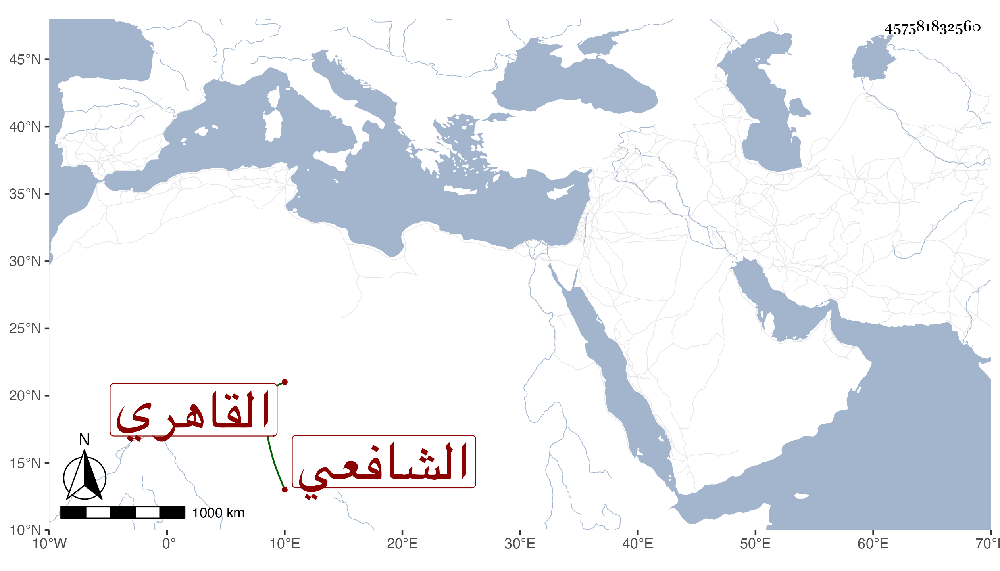

0902Sakhawi.DawLamic.ITO20230111-ara1.EIS1600.457581832560
Biography ID: 457581832560
939
علي بن لولو نور الدين القاهري الشافعي ويعرف بابن لولو . ذكره شيخنا في إنبائه وقال : كان عالما عاملا متورعا مديما للإقراء بجامع الأزهر وغيره وانتفع به الناس ولم يكن يأكل إلا من عمل يده لم يتقلد وظيفة قط وله في العربية مقدمة سهلة المأخذ ، مات سنة سبع وعشرين وهو في عشر الستين انتهى ، ومن شيوخه النور الأدمى , وممن أخذ عنه الكمال إمام الكاملية والمحيوى الطوخى وحدثانى بكثير من أحواله وكراماته وانه رؤى بعد موته وقال إنه في أعلى الجنة.
